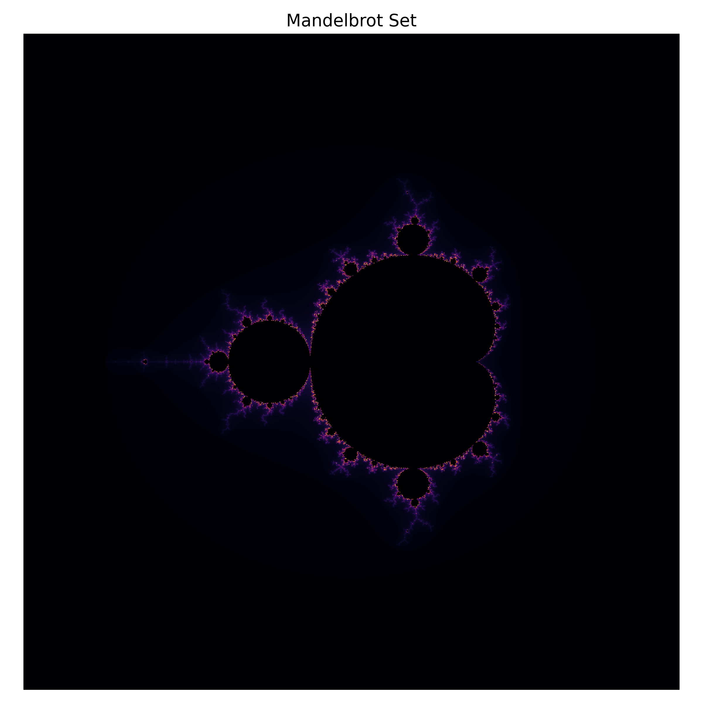
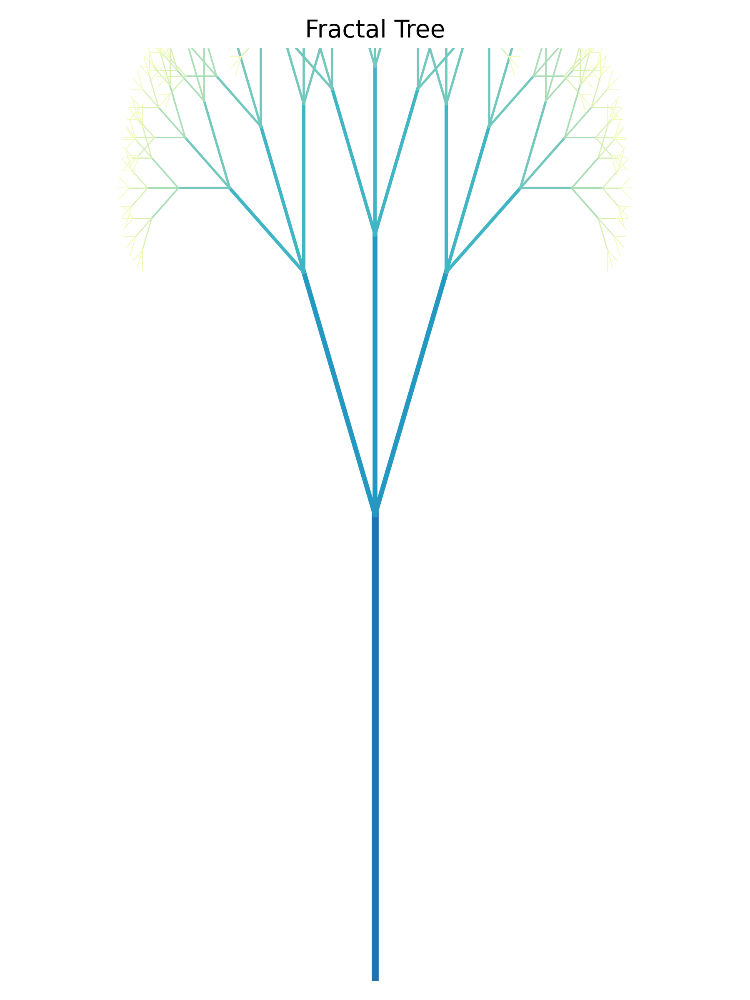
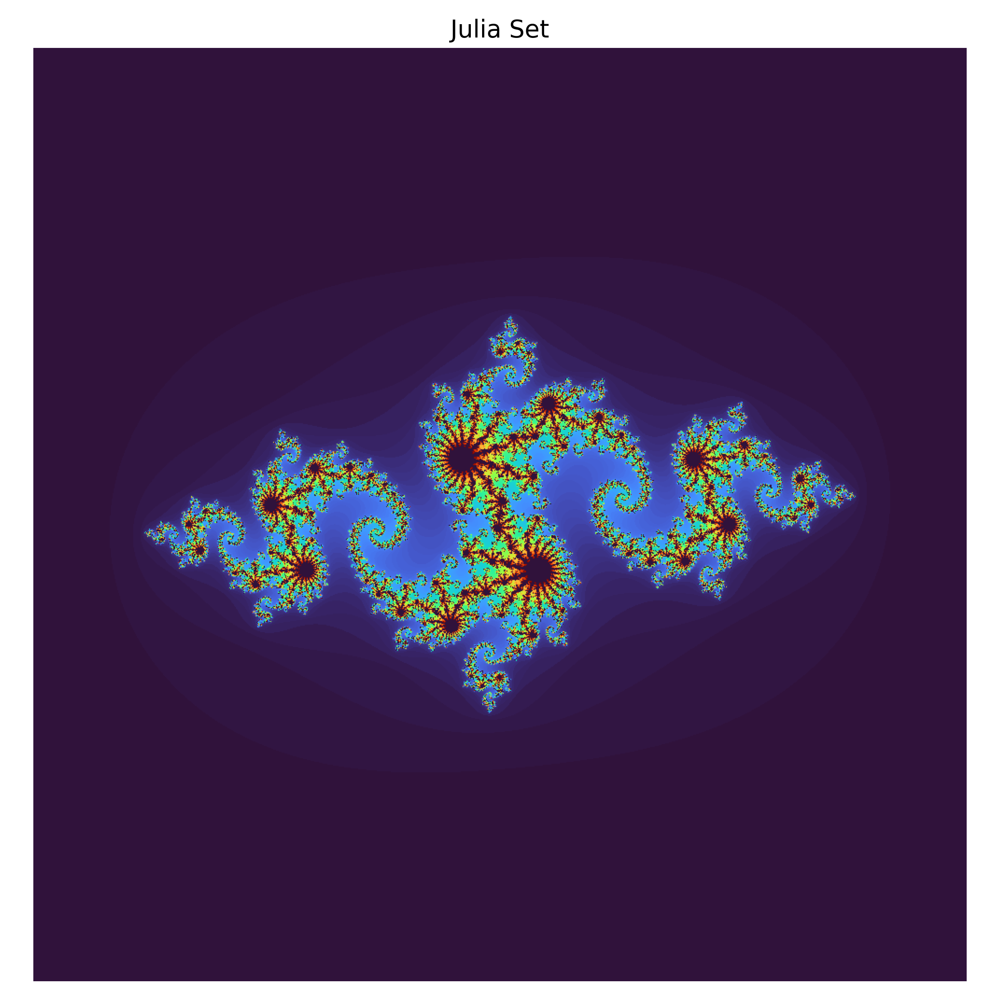

Journey Through Infinite Patterns
Fractals are extraordinary mathematical shapes that display self‑similarity: the same intricate structure appears at different scales. They emerge from simple rules repeated over and over, revealing endless detail no matter how close you zoom. In nature they describe the outlines of coastlines, the branching of trees and the structure of galaxies. This site invites you to explore the richness of fractal worlds through art, science and story.



Want to dive deeper into the mathematics and stories behind these images? Visit the Appendix for a comprehensive exploration of fractal geometry, chaos theory and generative art, along with an illustrated narrative.